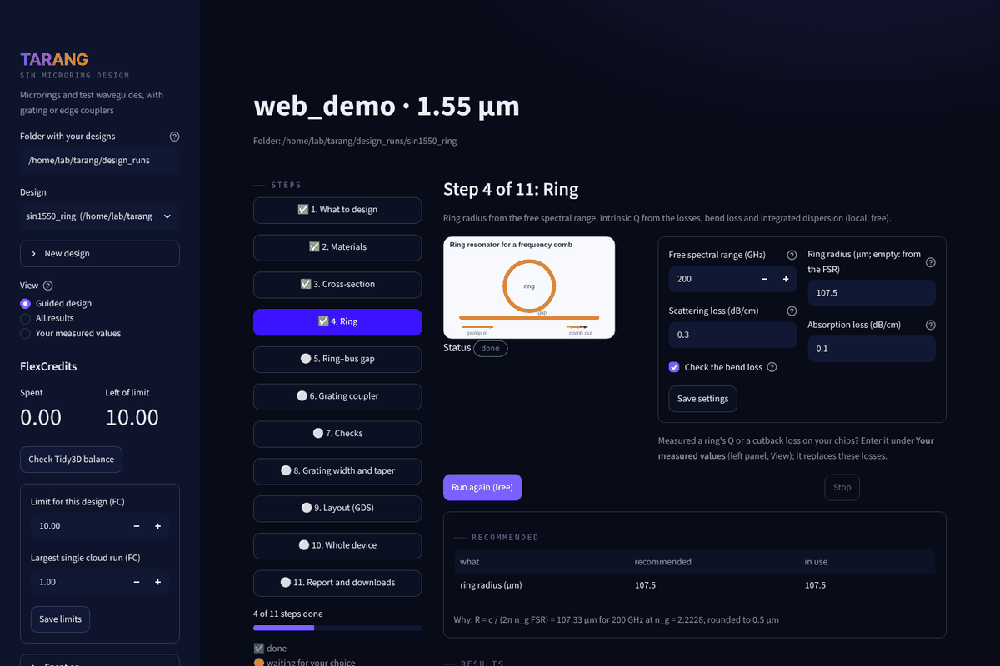
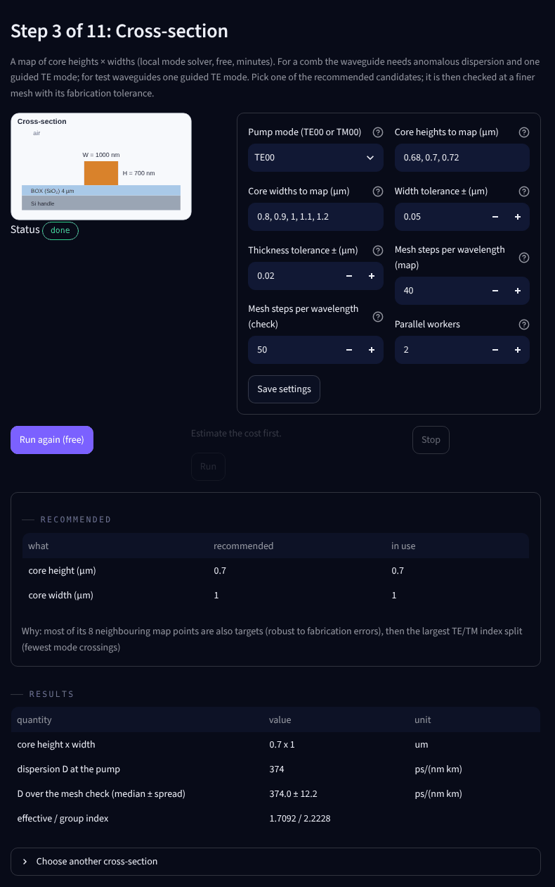

TARANG takes refractive-index data and a pump wavelength and designs the whole test chip: the waveguide cross-section with anomalous dispersion, the ring, its coupling gap, grating or edge couplers, and the GDS layout. Every number comes with the figure, the data and the method behind it.
Toolkit for Automated Resonator Analysis and Nonlinear-comb Generation · built on the Tidy3D mode solver and FDTD

Each step shows a drawing of what it designs, its settings, its cost, and then what it recommends with its results and figures. The GUI and the command line work on the same design folder.
Tabulated n, k of core, BOX and handle fitted over the band, and the fit checked between the data points.
A map of core heights and widths: anomalous dispersion with one guided mode, robust to your fabrication tolerance, D quoted with its mesh band. TE00 or TM00 as the pump mode.
Radius from the free spectral range, Q from the losses, bend loss, Dint, dispersive waves, γ(λ) and the thermal shift of the resonances.
3D FDTD of the coupling region at several gaps: the critical and over-coupled gaps, checked against coupled-mode theory.
Uniform, apodised or focusing grating couplers for your fibre angle, or edge couplers for a lensed fibre, with their tapers.
Fabrication tolerances of gap and FSR, mode families of the ring, coupling across the band, grating back-reflection and the loss budget.
The GDS mask with every device and its couplers, gap variants, reference waveguides and cutback spirals; parameters for other layout tools.
Fibre-to-fibre transmission over the band from every stage's result: each resonance's Q and dip depth, and the ripple between the couplers.
A report with every figure and how each number was obtained, a benchmark pack for another solver, and the inputs of a Lugiato–Lefever simulation.
Air-clad silicon nitride, 700 nm film on 4 µm of thermal oxide, fully etched. The figures below come from the free local steps of the 1550 nm example design (examples/design_sin1550.toml, a smaller map); every one is saved with the numbers it plots. Click a figure to open it full size.
The map solves the fundamental mode over core heights and widths. A geometry is a target when its dispersion is anomalous and it guides one TE mode; the most robust target is the one whose neighbours within the fabrication tolerance are targets too.
Chosen: 700 × 1000 nm. Its D is quoted as the median and spread over a ladder of meshes, with the grid lines on the core edges.
The radius follows from the FSR target, R = c / (2π ng FSR). A broadband solve gives D(λ), the integrated dispersion Dint(μ) of the ring's resonances, and where dispersive waves would appear.
The effective area gives the Kerr coefficient across the band, γ = 2π n2 / (λ Aeff).
Every step is a page: a drawing of what it designs, its settings, Run, then the recommendation, the results table and the figures. Cloud steps show their price before anything is submitted, and each cloud run keeps a link to it in the Tidy3D web interface.
The same design runs from a terminal with python -m tarang.design; both read and write the same folder.

Limits: couplers, layout and the whole-device model are TE00 only so far; sidewalls are vertical everywhere; the strength of avoided mode crossings is not modelled.
Python 3.11 or newer. Local steps need no account; cloud steps need a Tidy3D account and its API key (tidy3d configure).
git clone https://github.com/loqm/tarang.git cd tarang pip install -e ".[gui,layout]" python -m tarang.gui # the design GUI in your browser python -m tarang.design --config examples/design_sin1550.toml --price-only # the same design from a terminal: prices first